RTR: Imperium Surrectum
RTR: Imperium SurrectumGaul: Arverni, Aedui, Allobroges and Belgae
2022-09-19 · Maurits
Hello, everyone!
I am pleased to bring you some exciting information on another area of our map that has probably never been worked out to this degree of detail in the history of TW games: Gaul!
The RIS team is happy to have @Genava55 among us as an expert on all things Celtic. In today’s Dev Diary, he explains the background of four of our Celtic factions. Even though for the time being, their rosters continue to consist of upscaled RS units, we are already preparing the groundwork for an eventual remastering treatment such as that has already been given to the Greeks. Not just based off written sources such as Caesar, but also on sheer unlimited archaeological reports that keep being collected to eventually ensure the best possible representation of this area of the map.
I gladly give the word to Genava from here, join me and enjoy our expedition in Caesar’s footsteps!

Arverni
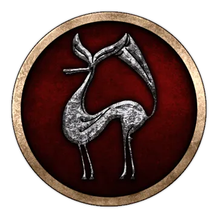
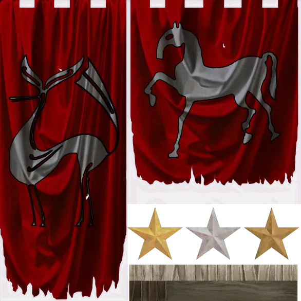
The Arverni were a powerful nation, mostly known due to its final days under the coalition of Vercingetorix, an Arvernian aristocrat revolting against Julius Caesar during his conquest. Vercingetorix and his father Celtillus were the last known members of a monarchic family, from whom Bituit and Luernos were the first mentioned kings in the classical literature. The powerful monarchy of the Arverni is contrasting with the aristocratic governments of their neighbours, notably the Aedui. This monarchic regime will be an important feature in future releases, as it will shape how the player will play the faction.
From an archaeological perspective, the Arverni seem to rise at the end of the 3rd century BC. A very large network of open settlements starts to appear in the plain of Aulnat, Gandaillat and La Grande Borne. Those locations were particularly impressive for their productive centres, notably with an entire operational chain working various metals (copper, bronze, silver, gold and iron) from the ores to the final items, like fine pieces of adornment and other jewellery. Later, the Arverni will build multiple oppida in the plain. From those oppida, Gergovia is the better known due to its successful defence during the Gallic Wars, but the site is not that impressive when compared to the oppidum of Corent. There, the digs enabled us to discover a densified central place with monumental public buildings. Notably a large sanctuary surrounded by a painted wall and a unique structure similar to a Greek theatre with its horseshoe shape, but in wood. The latter being interpreted as a plausible structure dedicated to political assemblies. Corent is probably the capital city called Nemossos by Strabo. The centralization of power probably helped the Arverni to build such important places, and this feature will eventually be put forward in game.
The faction symbol is based on a particular kind of painted ceramics popular during the 2nd century BC. The repertoire includes geometric decorations, but above all extraordinary compositions, inserting fantastical quadrupeds with slender legs into a proliferation of curvilinear ornaments. It is generally interpreted they are depicting stags and deer in a fanciful and imaginative ways. The technique is analogous to that of Greek red-figure ceramics and is another characteristic of these decorations, which use a fragile black pigment of organic origin. The excellent state of conservation of their decoration is explained by their discovery in sediments soaked in well water.
The Arverni established an influential hegemony over most of their neighbours, the Vellavi were originally incorporated in their nation according to Strabo and the Gabali have been their clients according to Caesar. During the war the Romans waged against the Salluvii between 122 and 120 BC, the Arverni took the side of the natives, as they were allied to the Allobroges who were themselves allied to the Salluvii. The Romans faced an impressive coalition, composed of the Allobroges, the Salluvi, the Arverni and their allies the Ruteni. They faced Quintus Fabius Maximus and Cnaeus Domitius Ahenobarbus during at least two battles. This war had deep consequences in Gaul, as it destabilized two powerful nations just a few years before the invasion of the Cimbri.
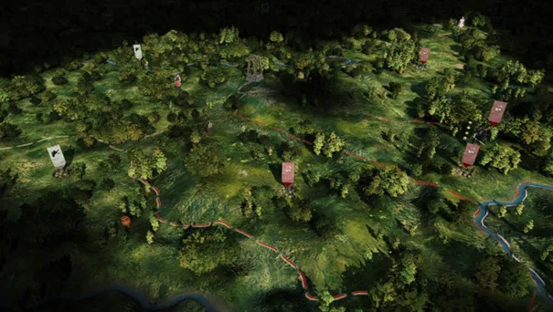

Aedui
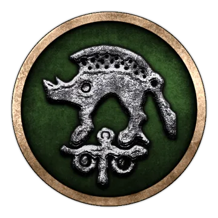
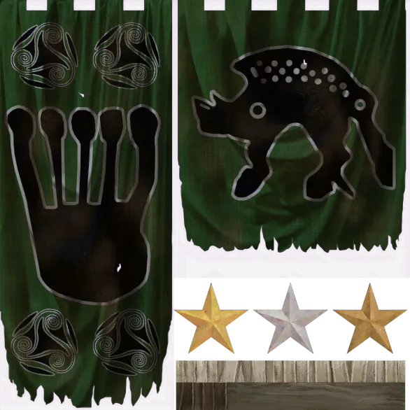
The Aedui are famous for their early alliance with Rome. They even called themselves brothers of the Romans. Prior to the Gallic Wars, the Aedui had the hegemony over most of Gaul and were able to impose their will on multiple nations. Their power seems to have risen after the defeat of the Allobroges and of the Arverni by the Romans during the campaign of Gnaeus Domitius Ahenobarbus at the end of the 2nd century BC. Although their new situation antagonized the Sequani who waged war against them and called the Suebi to join in order to stand a chance against their hegemony.
From an archaeological perspective, the tension between the Sequani and the Aedui seems to begin only around the 1st century BC. Before this situation, the Aedui minted a particular coin similar in weight to the Roman Denarius and shared it with their neighbours the Lingones, the Sequani and the Helvetii, as those coins have been found in great quantity among them. This suggests an economical partnership led by the Aedui, using a common currency to facilitate trade between the tribal states. Their earliest settlement with a continuous occupation is Cabillonum at Châlon-sur-Saône, it seems to start around the 3rd century BC and it became later an important place for river trade. It seems that Cabillonum has been their first capital settlement, although Bibracte was a major city during the Gallic Wars and slightly after.
The Aedui were ideally located to control several trade routes through the network of rivers running in their territory. They had the hand on the goods going to the East through the Saone and to the North through the Liger and the Yonne. It is probable that their most important competitor were the Allobroges controlling the Rhône below. In Bibracte, several ceramics displayed distinctive features related to the relations of the Aedui with Massalia and some of them bore inscriptions in Gallic language using the Greek alphabet. Due to their important role on the establishment of one of the earliest common currencies in Gaul and due to their role on the trading network, the Aedui will received several related features in future releases to make them very distinctive to play.
According to Caesar, the Ambarres, a neighbouring tribe of the Aedui, shared the same ancestry with them. They were their clients, alongside the Segusiavi. The Aedui seems to have controlled the Mandubii with their oppidum Alésia although it is unclear if they have been a related tribe (pagus) or an autonomous state (civitate). At the height of their might, during the 1st century BC, the Aedui were allied to the Bituriges, to the Senones, to the Lingones and to the Bellovaci.
The government of the Aedui is one of the better known from the classical sources, as Caesar provides multiple details about it in his account of the Gallic Wars. The power was held mostly by the Aeduian senate and it elected the magistrate ruling the nation. The Vergobret held the authority in society and choose the supreme commander leading the army. Although the Vergobret was powerful, his power was not absolute. He was forbidden to leave the territory and he could keep his position only for a year.
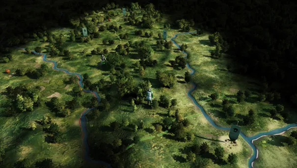

Allobroges
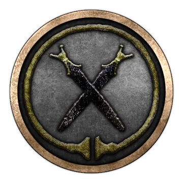
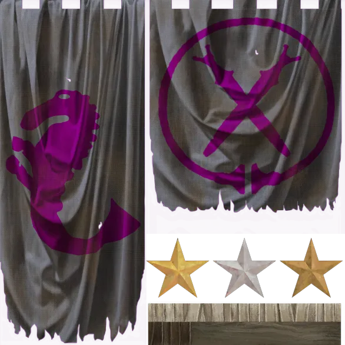
They were a rich people who controlled the Rhone between Lake Geneva and Grenoble. The Allobroges really entered history when in 218 BC Hannibal arbitrated an internal conflict between Brancos and his brother. Each claimed to be the legitimate king of the Allobroges. Brancos will provide help to the Carthaginians, but not being unanimous, a part of the Allobroges will try to forbid the passage of the Alps to the Carthaginians.
The Allobroges also controlled a part of the Alps in the region of Chablais and Haute Savoie. The Allobroges seem to have been a particularly warlike people, regularly offering auxiliaries to their neighbours and allies. It could even be that the famous Gaesatae who fought at Telamon, came from the territory of the Allobroges.
The Allobroges, as their name indicates, are a people who recently settled in the region. Their funeral practices are different from their neighbours, practicing cremation for burials. The Allobroges will be oriented in the future as a particularly warlike and aggressive faction.
The symbol of the faction is a reference to the anthropomorphic daggers of which a specimen was found on the territory of the Allobroges. These daggers are interpreted as symbols of authority, just like the torc.
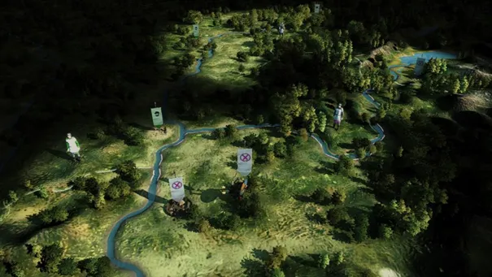

Belgae
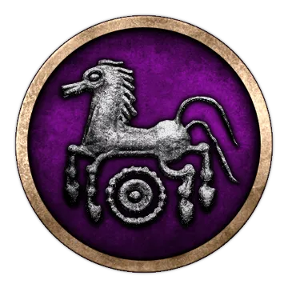
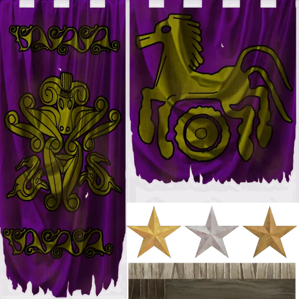
The mighty and brave Belgae are a well-known people and probably a lot of players are looking forward to play them in the campaign. It has been chosen to depict them through the tribes of the Bellovaci, Ambiani, Viromandui, Atrebates and Suessiones. If you are wondering why the Belgae are starting in a territory equivalent to modern Picardy in Northern France, and not in modern Belgium, this is due to a long misunderstanding. The modern nation of Belgium has nothing to do with the original Belgium described by the classical sources, as the name of that nation has been created mostly to separate themselves from the French (identified with the Gauls) and from the Germans and Dutch (identified with the Germanic people). Caesar in his account describes a large ensemble of people under the collective name Belgae, but at several points of his work, he describes a precise region called Belgium centred around the tribes mentioned above.
This understanding of the classical sources mentioning a region called Belgium around modern Picardy has been in relation with the archaeological record to verify if the area could have been the homeland of a new population at some point. Indeed, some intriguing pattern have been found in the area around the 3rd century BC. The area progressively shifted from inhumation to cremation burials. Finally, burials with weapons became rarer while massive sanctuaries were built containing large quantities of weapons. Those sanctuaries were either dedicated to fallen heroes of the Belgae or to the victory against enemies, it is especially striking at Gournay-sur-Aronde and Ribemont-sur-Ancre. Both sanctuaries contained the mutilated bodies of numerous warriors, exposed to the sky with their weapons.
It has been chosen to represent the Belgae as a newly formed political entity appearing in Northern Gaul through the contribution of veterans from the Celtic incursion in the Balkan and from a rising faction among the local aristocracy gaining independence. The new confederacy had to compete against the nearby tribes to maintain its position, notably against the Aremoricans, who were the dominant cultural group in the area before the rise of the Belgae. This is the setting for the player and upcoming releases will highlight this in further detail.
The faction symbol is a reference to a particular coin minted during the 1st century BC and used extensively in Northern and North-Eastern Gaul.
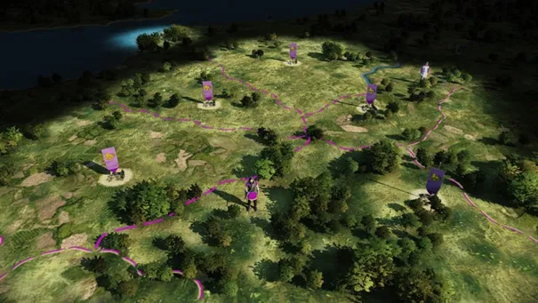

That's all we have prepared for this Dev Diary, but stay tuned - more is to come very shortly!
Please let us know what you think in the a channel channel. We know that many of you have since long fallen in love with Rome. Has this wonderful tale from the depths of Gaul made your reconsider your Caesarian sympathies? Will you join the proper masters of metalworking, and put his conquests to a deserved halt?!